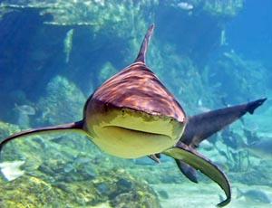
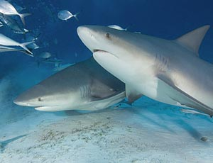

Der Bullenhai (Bull shark) ist groß, kräftig und schwer. Er hat eine sehr kurze, runde Schnauze und kleine Augen. Die erste Rückenflosse ist nahezu ein gleichseitiges Dreieck, die zweite Rückenflosse ist wesentlich kleiner als die Erste. Extrem kurze Schnauze, wesentlich kürzer als breit. Blasse Färbung, dunkelgrauer Rücken und weißer Bauch. Die Jungtiere haben schwarze Flossenenden. Bullenhaie sind in tropischen und warm-gemässigten Meeren weitverbreitet. Zur Ernährung der Bullenhaie gehören Haie, Rochen, Knochenfische, Weichtiere, Krebse und er kann auch kannibalisch sein und Tiere der gleichen Art attackieren und fressen. Die durchschnittliche Größe der Männchen liegt bei 225cm, die der Weibchen bei 240cm. Maximale Größe der Bullenhaie bis ca. 350cm. Für den Menschen gehören Bullenhaie ohne Zweifel zu den gefährlichsten Haiarten überhaupt. Basierend auf der ISAF (International Shark Attack File) werden sie, zusammen mit Tigerhaien und Weißen-Haien, zu den notorischsten Arten gezählt. Einzelne Wissenschafter sind sogar der Meinung, dass viele Unfälle, welche den Weißen Haien angelastet werden, in Wirklichkeit von Bullenhaien herrühren. Das wird dadurch begründet, dass nach Unfällen sehr oft nur Bissspuren übrig bleiben und Bullenhaie, ähnlich den Weißen, ebenfalls gesägte und nahezu dreieckige Zähne im Oberkiefer besitzen. Begegnet man diesen Tieren, fällt auf, dass sie oftmals direkt auf den Taucher oder Schnorchler zuschwimmen, etwas, was bei Riffhaien meist nicht der Fall ist (abgesehen von tauchergewöhnten oder angefütterten Tieren). Dabei entsteht meist auch ein Gefühl von diesen Haien "angestarrt" zu werden, etwas, was zwar den meisten Grauhaien nachgesagt werden kann, bei Bullenhaien aber durch die sehr kleinen Augen unangenehm auffällt.
 15.11.2011